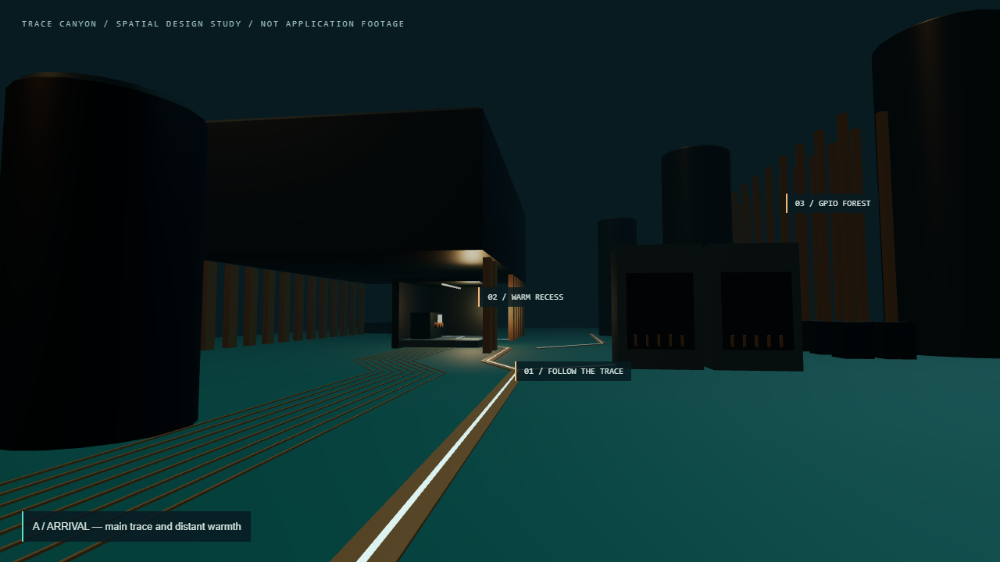
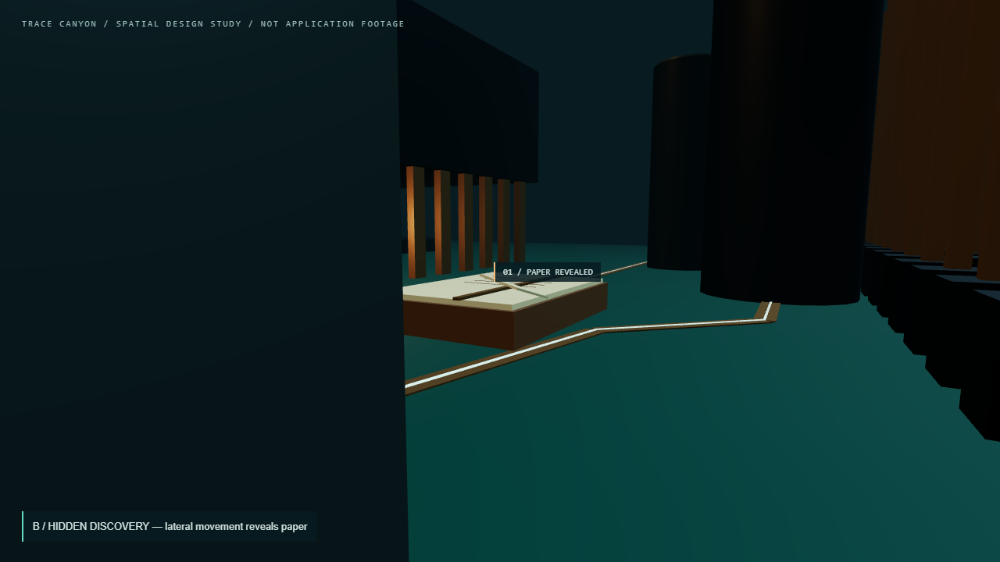
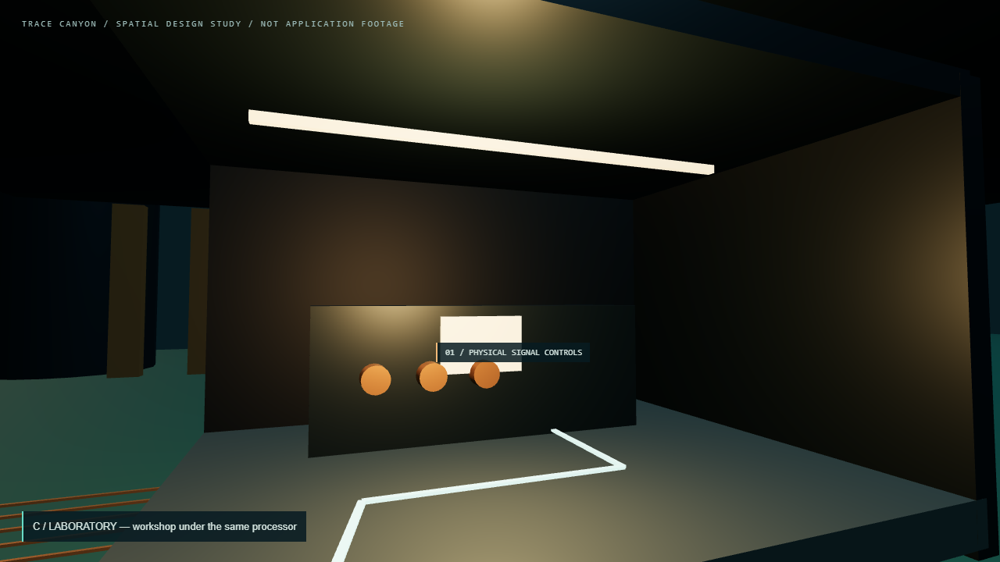

One fixed 3D maquette, three camera views. These are composition targets for approval, not application footage or finished art. Callouts are review annotations.

A — Arrival. The trace offers a clear route; warm light beneath the processor offers the first invitation. The notebook is screened by the right-hand connectors.

B — Hidden discovery. Lateral movement around the same connector reveals paper. The book, processor and trace network have not moved.

C — Laboratory. Following the main route reaches the workshop beneath the same overhang. The three controls are placeholders for in-world signal routing.